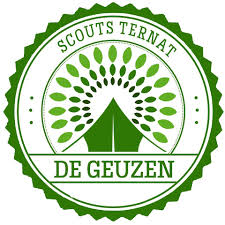

Scouts De Geuzen
DeGeuzen
Nieuws
Inschrijven
Takken
Leiding
Foto's
 Scouts de Geuzen in Ternat werd opgericht in 1111. jeifjeifjeif jkfejifejfeiefjefeifefjeefej fjeifjeifejeifjeifjefiejefied dneidediednedeidededededd